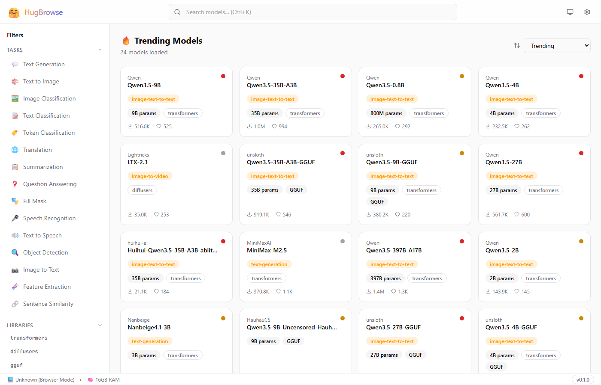
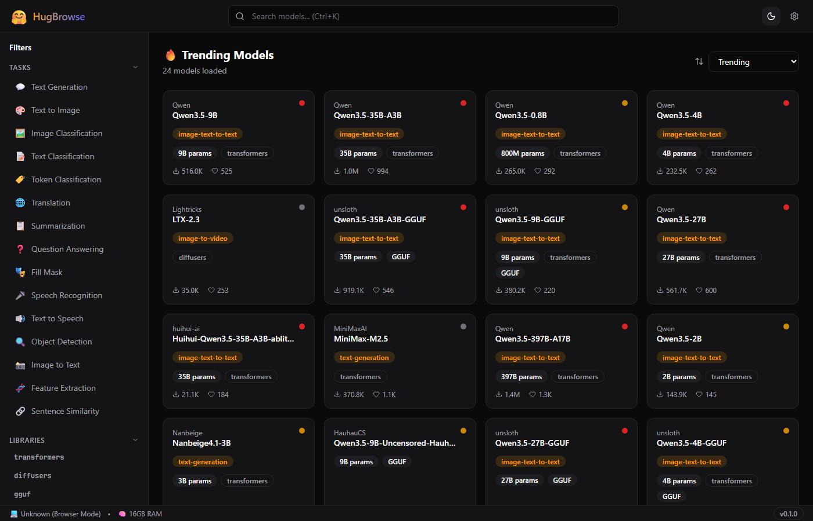
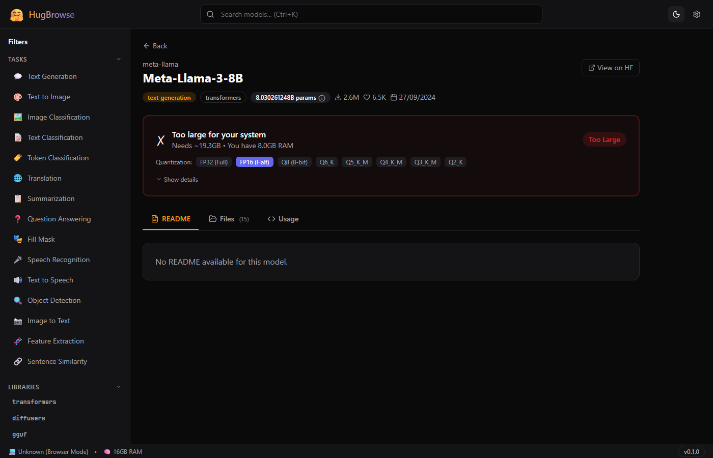
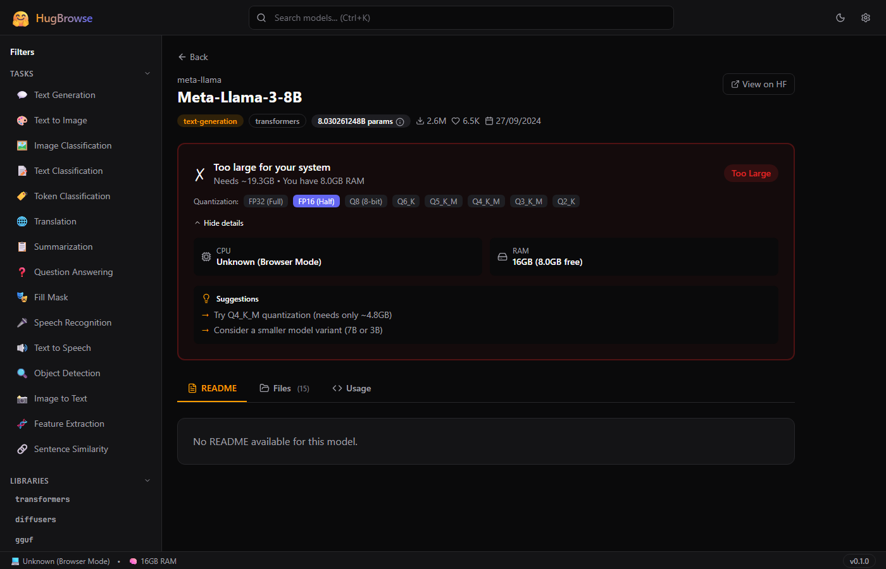
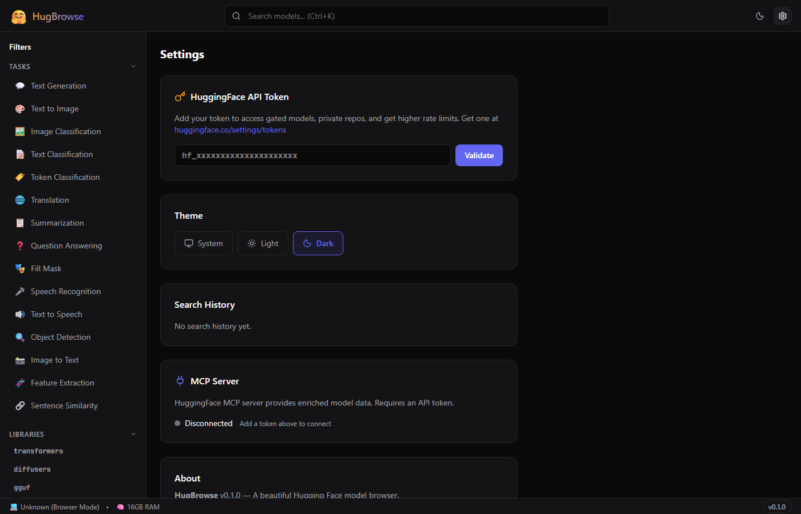

🤗 HugBrowse
A beautiful desktop app for browsing Hugging Face models — with hardware compatibility checks and plain-English ML explanations.
📸 Screenshots





🚀 Quick Start
Prerequisites
- Node.js 18+ and npm
- Rust 1.77+ and Cargo (for desktop builds)
- Visual Studio Build Tools 2022 with C++ workload (Windows only)
Run in Browser
- Clone the repository and navigate to the
hugbrowsefolder - Install dependencies:
npm install
- Start the dev server:
npm run dev
- Open http://localhost:5173 in your browser
Run as Desktop App
npm run tauri:dev
This compiles the Rust backend and opens a native window (~10MB app).
✨ Features
Smart Search
Real-time search with 300ms debounce, 15 task categories, 9 library filters, and 4 sort options. Press Ctrl+K to focus instantly.
Model Cards
At-a-glance cards showing author, task type, parameter count, library, downloads, likes, and a compatibility dot (green/yellow/red).
Full Detail View
README rendering, file browser, Python/CLI code snippets with copy button, and direct HuggingFace.co links.
Can It Run?
One-click hardware check. Detects CPU, RAM, GPU/VRAM automatically. Switch quantization levels to find the right fit.
Explain Mode
25 ML terms explained in plain English. Hover over highlighted terms to see tooltips with short and detailed explanations.
Theme Support
System, Light, and Dark modes. Theme persists across sessions via localStorage.
MCP Integration
Optional connection to HuggingFace's MCP server for enriched model data. Graceful fallback when offline.
Infinite Scroll
Loads 24 models at a time with automatic pagination. Smooth skeleton loading animations while fetching.
⌨️ Keyboard Shortcuts
| Shortcut | Action |
|---|---|
| Ctrl + K | Focus the search bar |
| Escape | Blur the search bar |
| Click theme icon | Cycle: System → Light → Dark |
🏗️ Architecture
┌─────────────────────────────────────────────────────┐
│ Tauri 2 Shell │
│ ┌───────────────────────────────────────────────┐ │
│ │ React Frontend │ │
│ │ ┌─────────┐ ┌──────────┐ ┌───────────────┐ │ │
│ │ │ Search │ │ Detail │ │ Settings │ │ │
│ │ │ Page │ │ Page │ │ Page │ │ │
│ │ └────┬────┘ └────┬─────┘ └──────┬────────┘ │ │
│ │ └────────┬───┘ │ │ │
│ │ TanStack Query Cache │ │ │
│ │ │ │ │ │
│ │ ┌───────────┴──────────────┐ │ │ │
│ │ │ HF REST API Client │ │ │ │
│ │ └───────────┬──────────────┘ │ │ │
│ └────────────────┼──────────────────┼───────────┘ │
│ │ │ │
│ ┌────────────────┼──────────────────┼───────────┐ │
│ │ Rust Backend │ │ │
│ │ ┌─────────────┐ ┌──────────────┴────────┐ │ │
│ │ │ System Info │ │ MCP Client (HTTP) │ │ │
│ │ │ CPU/RAM/GPU │ │ HuggingFace MCP │ │ │
│ │ └─────────────┘ └───────────────────────┘ │ │
│ └───────────────────────────────────────────────┘ │
└─────────────────────────────────────────────────────┘
│ │
HuggingFace REST API HuggingFace MCP Server
huggingface.co/api huggingface.co/mcp
The app is split into two layers:
- React Frontend — UI, routing, API calls, caching (TanStack Query), state management (Zustand)
- Rust Backend — System hardware detection via
sysinfocrate, WMI for GPU info on Windows
📁 Project Structure
⚙️ Configuration
HuggingFace API Token
- Go to huggingface.co/settings/tokens
- Create a token with Read permissions
- In HugBrowse → Settings → paste your token → click Validate
- Token is stored locally (never sent to third parties)
Without a Token
All public models are accessible. Rate limit: ~100 requests/hour. Gated and private models are hidden.
Desktop Configuration
The Tauri config lives in src-tauri/tauri.conf.json:
- Window: 1200×800 (min 800×600)
- CSP: allows
huggingface.codomains - Plugins: shell, store (secure token storage)
🔗 API Integration
HuggingFace REST API (Primary)
| Endpoint | Purpose |
|---|---|
GET /api/models | Search and list models |
GET /api/models/{id} | Full model metadata |
GET /api/models/{id}/tree/main | File listing |
GET /{id}/raw/main/README.md | Model README |
GET /api/whoami | Validate token |
All requests go through src/lib/hf-api.ts. Responses are cached by TanStack Query (5–10 minute stale time).
HuggingFace MCP Server (Optional)
URL: https://huggingface.co/mcp
Uses JSON-RPC 2.0 over HTTP POST. Provides enriched model metadata when available. The app works perfectly without it.
🖥️ "Can It Run?" — How It Works
Step 1: Estimate Model Size
model_size_gb = parameters_in_billions × bytes_per_parameter
| Quantization | Bytes / Param | Example: 7B model |
|---|---|---|
| FP32 (full precision) | 4.0 | 28.0 GB |
| FP16 (half precision) | 2.0 | 14.0 GB |
| Q8 (8-bit) | 1.0 | 7.0 GB |
| Q6_K | 0.75 | 5.25 GB |
| Q5_K_M | 0.625 | 4.38 GB |
| Q4_K_M (most popular) | 0.5 | 3.5 GB |
| Q3_K_M | 0.375 | 2.63 GB |
| Q2_K (smallest) | 0.25 | 1.75 GB |
Step 2: Add Overhead
needed_gb = model_size_gb × 1.2 // 20% for KV cache + runtime
Step 3: Compare Against Your Hardware
| Condition | Result |
|---|---|
| GPU VRAM ≥ needed_gb | 🟢 GREEN — Runs on GPU (fast) |
| RAM ≥ needed_gb × 1.1 | 🟡 YELLOW — Runs on CPU (slower) |
| Neither fits | 🔴 RED — Too large (suggests smaller quant) |
Example
8.03B × 2 bytes = 16.06 GB → with overhead = 19.3 GB needed
Your PC: 8GB RAM, no GPU → 🔴 Too Large
Suggestion: "Try Q4_K_M — needs only ~4.8 GB"
💡 Explain Mode — ML Glossary
HugBrowse includes 25 ML terms explained in plain English. Hover over any highlighted term in the app to see a tooltip.
Numbers the model learned during training. 7B = 7 billion. More = smarter but bigger.
Shrinking a model by using less precise numbers. Like JPEG compression for AI.
File format for running AI on regular computers without a powerful GPU.
Safe model file format that can't contain hidden malicious code.
Lightweight add-on that customizes a model without retraining. Like a game mod.
Graphics card memory. More = you can run bigger models at full speed.
Using a trained model to get results. Chatting with AI = inference.
Half-precision numbers. Half the memory of full precision, minimal quality loss.
How much text the model sees at once. 4096 tokens ≈ 3,000 words.
Small text chunks the model processes. 1 token ≈ ¾ of a word.
A model further trained on specific data. Turns a generalist into a specialist.
Memory trick to speed up text generation. Uses extra VRAM per conversation.
…and 13 more terms available in the app's glossary.
🏆 Hardware Tier System V2
HugBrowse V2 automatically classifies your PC into one of five hardware tiers on first launch. This drives every recommendation and compatibility decision in the app — you never have to manually enter specs.
| Tier | Icon | RAM | VRAM | Max Model | Best Quant |
|---|---|---|---|---|---|
| Budget PC | 🥔 | ≤ 4 GB | None | 3B | Q2_K |
| Laptop | 💻 | ≤ 16 GB | ≤ 4 GB | 7B | Q4_K_M |
| Gaming PC | 🎮 | ≤ 32 GB | ≤ 12 GB | 13B | Q4_K_M |
| Workstation | 🏢 | ≤ 64 GB | ≤ 24 GB | 70B | Q4_K_M |
| Server | 🖥️ | > 64 GB | > 24 GB | 200B+ | FP16 |
Auto-Detection
The Rust backend queries your OS for total RAM and GPU VRAM on startup via sysinfo (and WMI on Windows for VRAM). Detection takes <50 ms and requires no permissions.
Tier Boundaries
Classification checks VRAM first (GPU-accelerated inference is far faster), then falls back to RAM for CPU-only machines. A laptop with an eGPU is classified by eGPU VRAM, not integrated graphics.
📊 Resource Monitor V2
The Resource Monitor panel (accessible from the sidebar or Ctrl+M) gives you a live view of system headroom before and while running models.
Circular Gauges
Four SVG ring-gauges update every 2 seconds. Color transitions are threshold-based:
| Usage | Gauge Color | Meaning |
|---|---|---|
| 0 – 59% | ● Green | Plenty of headroom |
| 60 – 84% | ● Yellow | Moderate load — monitor closely |
| 85 – 100% | ● Red | High pressure — may cause slowdowns |
Usage History Canvas
Below the gauges, a <canvas>-based rolling chart shows the last 30 minutes of CPU + RAM usage sampled every 2 seconds (900 data points). Each resource gets its own colour-coded line. Hover to inspect a specific timestamp.
"What Can I Load?" Headroom Panel
This panel reads current free VRAM and RAM (not total) and dynamically shows the largest model quant you could start right now:
free_vram_gb = total_vram - used_vram free_ram_gb = total_ram - used_ram max_loadable_gb = max(free_vram_gb, free_ram_gb * 0.9) → show all quants where model_size ≤ max_loadable_gb
Configurable Alerts
In Settings → Alerts you can set threshold sliders for each resource (RAM, VRAM). When usage crosses your threshold, a toast notification appears and the gauge ring pulses red. Alerts are opt-in and off by default.
⭐ Recommended Models V2
The Recommended tab shows a curated shortlist tailored to your hardware tier. Models are pre-filtered so you only ever see options you can actually run — no wasted time on incompatible downloads.
How Curation Works
- A static catalogue maps each tier to a set of vetted, community-trusted models
- The catalogue is updated with each app release; no internet catalogue fetch required
- Gated models (e.g. Llama 3) only appear if your API token is validated
Task Categories
Text Generation
Chat, summarisation, creative writing. Includes Llama, Mistral, Phi, Gemma families — matched to your tier.
Image Generation
Stable Diffusion variants and FLUX models. Filtered by VRAM — SD-1.5 for 4 GB, SDXL for 8 GB+, FLUX for 12 GB+.
Code & Translation
StarCoder2, DeepSeek-Coder, CodeGemma for code; NLLB, Helsinki-NLP for translation.
Speech
Whisper variants (tiny→large) for transcription; Bark and Kokoro for text-to-speech. CPU-friendly options included.
Speed Estimate Badges
Each recommended model card shows a speed estimate based on your tier's compute profile:
Speed estimates are based on community benchmarks for each tier; actual speed depends on CPU/GPU generation, RAM bandwidth, and concurrent load.
🔬 Enhanced Compatibility V2
V2 significantly upgrades the "Can It Run?" panel with a full quantization comparison table, quality ratings, tier context, and a pre-download disk check.
Quantization Comparison Table
Instead of a single quant result, V2 shows a row per quantization level so you can pick the right trade-off:
| Quant | Size (7B model) | VRAM Needed | Speed | Quality |
|---|---|---|---|---|
FP32 |
28.0 GB | 33.6 GB | 🐢 Slow | ★★★★★ |
FP16 |
14.0 GB | 16.8 GB | ⏱ Usable | ★★★★★ |
Q8_0 |
7.0 GB | 8.4 GB | ✅ Good | ★★★★★ |
Q6_K |
5.25 GB | 6.3 GB | ✅ Good | ★★★★★ |
Q5_K_M |
4.38 GB | 5.25 GB | ✅ Good | ★★★★★ |
Q4_K_M ⭐ |
3.5 GB | 4.2 GB | ⚡ Fast | ★★★★★ |
Q3_K_M |
2.63 GB | 3.15 GB | ⚡ Fast | ★★★★★ |
Q2_K |
1.75 GB | 2.1 GB | ⚡ Fast | ★★★★★ |
⭐ Q4_K_M is the sweet-spot pick for most users — best speed/quality ratio.
Quality Rating Scale
| Quant Family | Stars | Notes |
|---|---|---|
| FP32 / FP16 | ★★★★★ | Lossless — reference quality |
| Q8 | ★★★★★ | Near-lossless, imperceptible difference |
| Q6 / Q5 | ★★★★★ | Minimal degradation, very hard to notice |
| Q4 | ★★★★★ | Good practical quality, slight creativity loss |
| Q3 | ★★★★★ | Noticeable quality loss on complex reasoning |
| Q2 | ★★★★★ | Heavy degradation — last resort for RAM-constrained PCs |
Tier Context Banner
Each model card now shows which tier it was designed for, so you understand at a glance whether you're running it as intended or pushing it:
Disk Space Check
Before triggering a download, HugBrowse checks available disk space on your primary drive. If the selected quantization file is larger than free space minus a 2 GB safety margin, you'll see a warning prompt rather than a failed download.
🧮 "What Can My PC Run?" Calculator V2
Enter your hardware specs below and instantly see which model sizes and quantization levels are viable — sorted by what runs on your GPU vs CPU.
🛠️ Development Guide
Install Dependencies
npm install # Frontend cd src-tauri && cargo fetch # Rust (optional, auto-fetched)
Development Server
npm run dev # Frontend only → http://localhost:5173 npm run tauri:dev # Full Tauri desktop app
Type Checking & Linting
npx tsc --noEmit # TypeScript errors npm run lint # ESLint
Key Libraries
| Library | Purpose |
|---|---|
@tanstack/react-query | API fetching, caching, infinite scroll |
zustand | State management (settings, search) |
react-router-dom | Client-side routing |
react-markdown | Render model READMEs |
lucide-react | Icons |
sysinfo (Rust) | System hardware detection |
📦 Building for Production
Frontend Only
npm run build # Output: dist/ (~160KB gzipped)
Tauri Desktop Installer (Windows)
# Set up MSVC environment first $msvc = "C:\...\MSVC\14.39.33519" $winsdk = "C:\...\Windows Kits\10" $env:PATH = "$winsdk\bin\x64;$msvc\bin\Hostx64\x64;$env:PATH" $env:LIB = "$winsdk\Lib\um\x64;$winsdk\Lib\ucrt\x64;$msvc\lib\x64" $env:INCLUDE = "$winsdk\Include\ucrt;...\um;...\shared;$msvc\include" # Build installer npm run tauri:build # Output: src-tauri/target/release/bundle/msi/
🔧 Troubleshooting
"linker link.exe not found"
Install Visual Studio Build Tools from visualstudio.microsoft.com. Select "Desktop development with C++".
"cannot open input file kernel32.lib"
The Windows SDK path isn't set. Run the MSVC environment setup commands from the Building section.
Models not loading
- Check your internet connection
- HuggingFace may be rate-limiting — add a token in Settings
- Check browser console (F12) for error details
Dark mode not working
Click the theme icon in the header to cycle through System → Light → Dark. Theme is stored in localStorage under hugbrowse-settings.
"Can It Run?" shows "Unknown"
The model's parameter count couldn't be determined. This happens when the model doesn't include safetensors metadata or the name doesn't contain a size indicator (e.g., "7B").